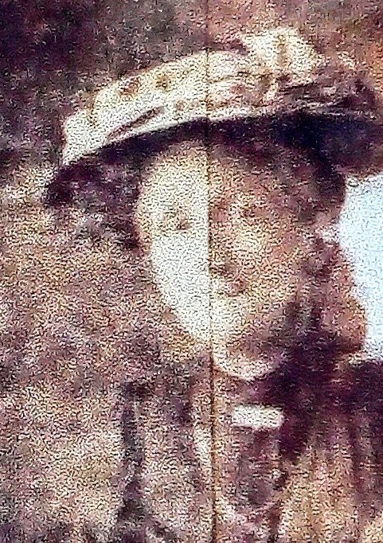
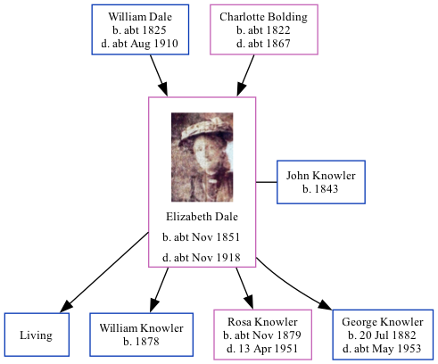

Elizabeth Ann Knowler (née Dale) cNov 1851 - c1918
[ Home ] | [ Calendar ] | [ Surnames Index ] | [ Family History ]The child of William Dale (an agricultural laborer) and Charlotte Bolding, Elizabeth Dale, the first cousin four-times-removed on the father's side of <a href="I1.html">Nigel Horne</a>, was born in Chartham, Kent, England <i>c.</i> Nov 1851<span class="citation">1,2,3</span>, was baptized there at St Mary on Feb 1, 1852 and also married John Knowler (a general laborer with whom she had 4 children: <a href="I3398.html">Arthur John</a>, <a href="I3399.html">William Edward</a>, <a href="I3400.html">Rosa Ellen</a> and <a href="I3401.html">George</a>, along with 1 surviving child) there at St Mary, on Oct 14, 1873<span class="citation">5</span>.</p><p>Elizabeth spent all of her life in Kent, England. Throughout her life, she lived in several places around the county: at Heath Farm Cottages, Canterbury, Kent, England on Apr 7, 1861<span class="citation">1</span>; on Parish Road in Chartham on Apr 2, 1871<span class="citation">2</span>; in Bilting on Apr 3, 1881<span class="citation">6</span> and on Apr 5, 1891<span class="citation">7</span>; at The Lees, Chilham on Mar 31, 1901<span class="citation">8</span> (when she was living with her father, William); and at Round Oast Cottage, Ospringe on Apr 2, 1911<span class="citation">9</span>. <p>She died <i>c.</i> Nov 1918 in Faversham, Kent<span class="citation">4</span>.
Parents
- William was born c. 1825
- Charlotte was born c. 1822
Children
- William Edward was born in 1878
- Rosa Ellen was born c. Nov 1879
- George was born on Jul 20, 1882
Citations
- 1861 England, Wales & Scotland Census - Findmypast (was age 9 and the daughter of the head of the household)
- 1871 England, Wales & Scotland Census - Findmypast (was age 19 and the daughter of the head of the household)
- England & Wales births 1837-2006 - Findmypast
- England & Wales deaths 1837-2007 - Findmypast
- England & Wales Marriages 1837-2005 - Findmypast
- 1881 England, Wales & Scotland Census - Findmypast (was age 28 and the wife of the head of the household)
- 1891 England, Wales & Scotland Census - Findmypast (was age 39 and the wife of the head of the household)
- 1901 England, Wales & Scotland Census - Findmypast (was age 49 and the wife of the head of the household)
- 1911 Census for England & Wales - Findmypast (was age 59 and the wife of the head of the household)
Media
Elizabeth Ann Dale

1881 England, Wales & Scotland Census - GBC/1881/0004705504
England & Wales births 1837-2006 - BMD/B/1851/4/AG/000846/017
England Births & Baptisms 1538-1975 - R_885421953
Kent Baptisms - GBPRS/CANT/B/96193040
1861 England, Wales & Scotland Census - GBC/1861/0003428298
1871 England, Wales & Scotland Census - GBC/1871/0014163787
1891 England, Wales & Scotland Census - GBC/1891/0005718391
1901 England, Wales & Scotland Census - GBC/1901/0005458727
1911 Census for England & Wales - GBC/1911/RG14/04400/0039/2
England & Wales deaths 1837-2007 - BMD/D/1918/4/AZ/000961/086
Family Tree
Generated by Ged2Site. Last updated on Jul 20, 2025